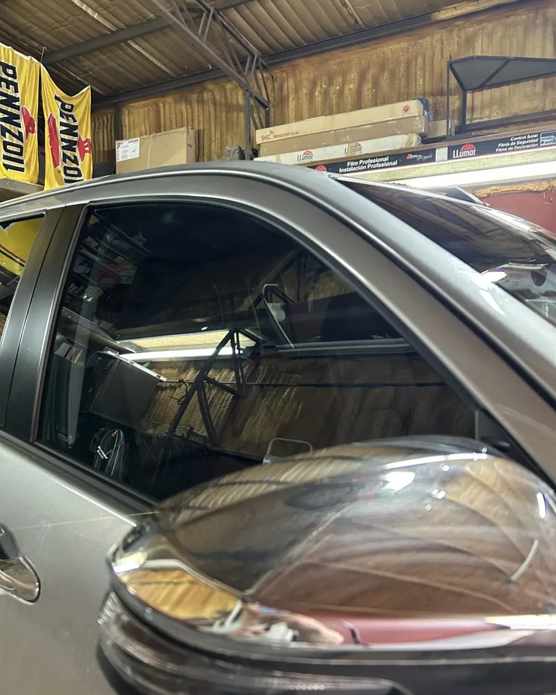
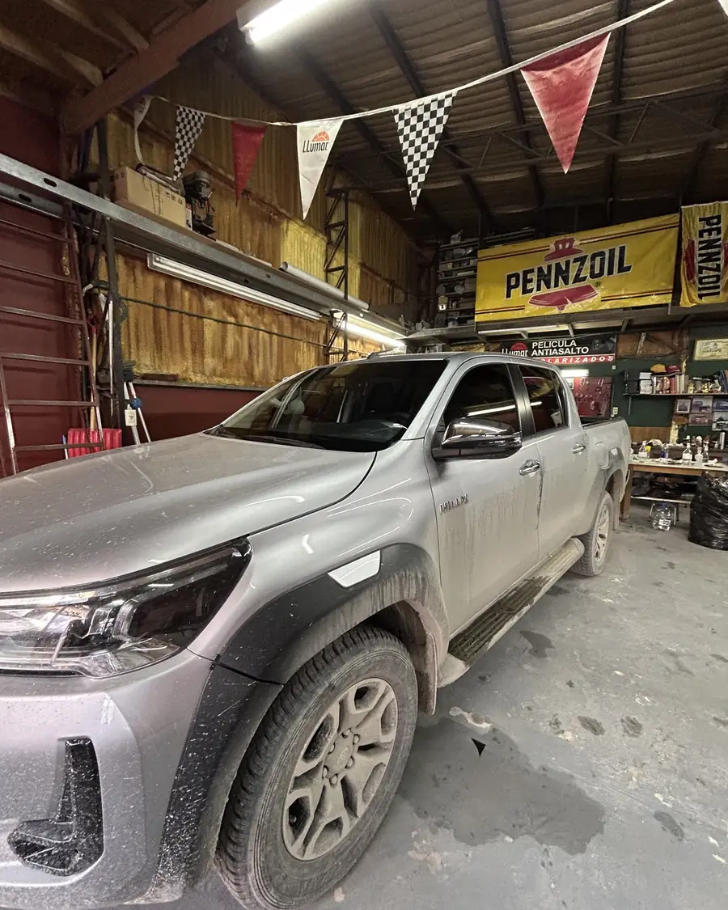
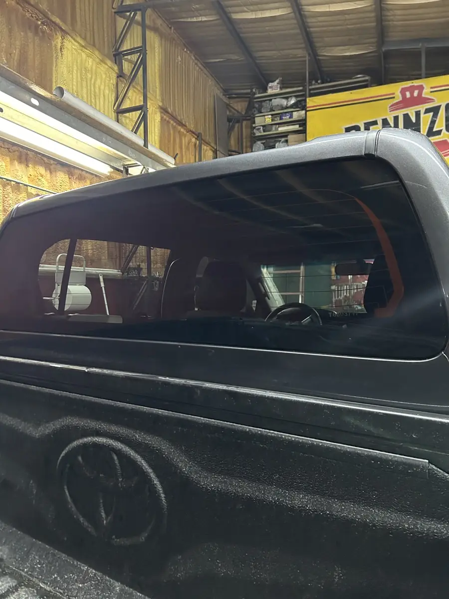
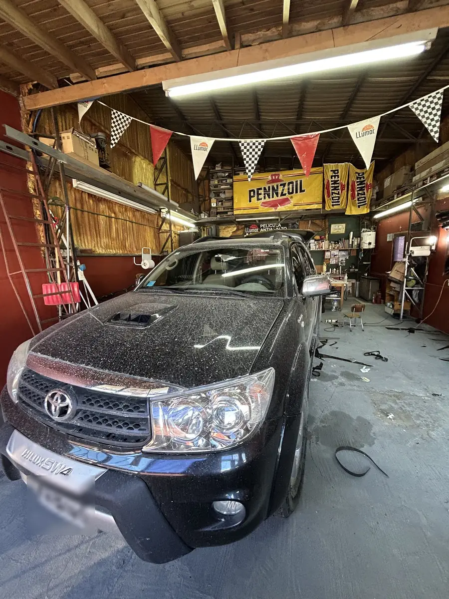
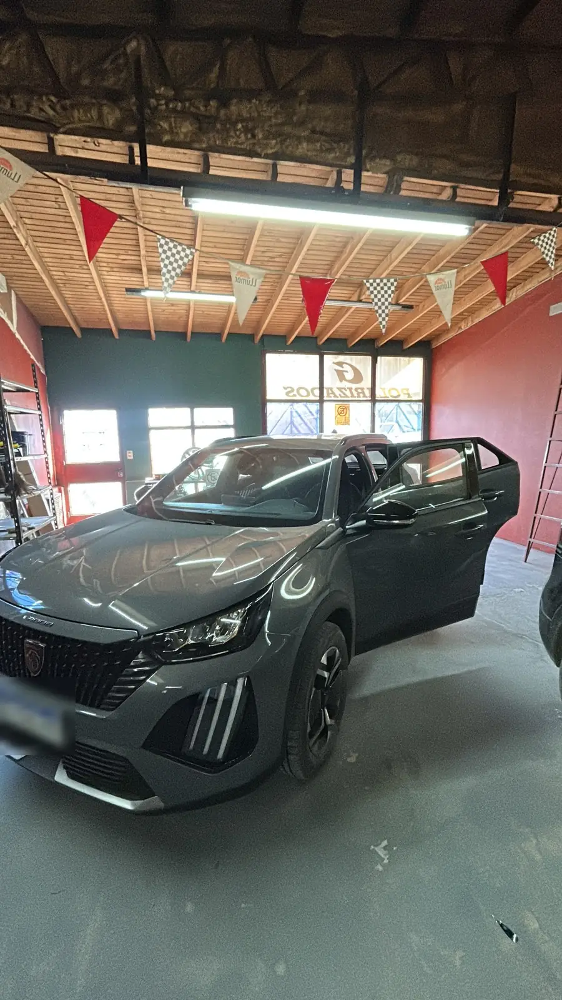

Polarizado en Ushuaia
Autos, camionetas, utilitarios, casas y comercios. Taller familiar, el primero de polarizado de la ciudad. Trabajamos con turno en Juana Genoveva Fadul 431.


AntesDespuésDeslizá sobre la foto. Toyota Hilux, trabajo real del taller.
Trabajos recientes
Fotos sacadas en el taller, sin retoques.

 AntesDespués
AntesDespués




Qué hacemos
Te asesoramos para elegir el tono que más te conviene según el uso que le das.
- Polarizado de autosCompleto o solo algunos vidrios.
- Camionetas y 4x4Hilux, SW4, Amarok, Ranger y la que tengas.
- Combis, utilitarios, camiones y colectivosVehículos de trabajo y de pasajeros.
- Retiro de polarizadoSacamos lámina vieja, burbujeada o descolorida.
- Grabado de cristalesGrabamos los vidrios del vehículo.
- Casas y comerciosVidrieras, ventanas y oficinas.

Dónde estamos
Trabajamos bajo techo y con turno, así cada vehículo tiene el tiempo que necesita.
Preguntas frecuentes
¿Cuánto sale?
Depende del vehículo y de los vidrios que quieras polarizar. Mandanos marca y modelo por WhatsApp y te pasamos el precio.
¿Cuánto tarda?
Un auto lleva alrededor de dos horas. Camionetas grandes, utilitarios y retiro de lámina vieja pueden llevar más; te lo decimos cuando pedís el turno.
¿Hay que traerlo lavado?
En lo posible, sí. Con el auto limpio hay menos polvillo cuando colocamos la lámina, y la terminación queda mejor. Si no llegaste a lavarlo, avisanos cuando pedís el turno.
¿Sacan polarizado viejo?
Sí. Si la lámina está burbujeada, rayada o descolorida, la retiramos y, si querés, te colocamos una nueva.
¿Polarizan casas y comercios?
Sí: vidrieras, ventanas y oficinas. Escribinos con las medidas aproximadas o una foto y te asesoramos.

Pedí tu turno
Escribinos con la marca y el modelo. Te pasamos el precio y el primer turno libre.